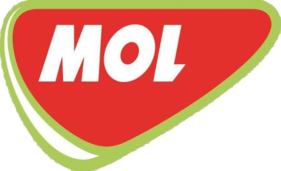

Magyar fejlesztőcsapat vagyunk, mi fejlesztjük és üzemeltetjük az Interceptet. Ez egy médiafigyelő rendszer, amely elolvassa a beérkező cikkeket, posztokat és videókat, és megmondja, melyik mennyire fontos egy adott cégnek.
Az Intercept folyamatosan fut, több százezer forrásból és sok nyelven dolgozik. Emellett megrendelésre egyedi szoftvert is fejlesztünk.
Egyedi szoftvert fejlesztünk.
Webes és mobilalkalmazást, backendet, adatfeldolgozást és nyelvi modellekre épülő rendszereket. Olyat nem adunk át, amit mi magunk ne használnánk szívesen.
Így dolgozunk.
Ezek a saját szabályaink. Az Interceptnél és a megrendelők projektjein is ezek szerint dolgozunk.
Partnereink.

MOLEnergiaFejlesztőket keresünk.
Tapasztalt szoftvermérnököket keresünk, akik terveztek és üzemeltettek már éles rendszert. Önéletrajz nem kell. Írd meg, min dolgozol most, küldj egy projektet, amire büszke vagy, és pár mondatban azt is, ami mostanában foglalkoztat.
Az Intercept.
A saját termékünk, a fent leírtak mind ebben futnak. Minden beérkező cikket, posztot és videót aszerint pontoz, mennyire fontos a te cégednek.
Globális
médiafigyelés
kulcsszavakon túl.
Kommunikációs, kockázatkezelési és vezetői csapatoknak. Az Interceptet a cégedre szabva állítjuk be: minden hírt elolvas, és mindegyiket pontozza aszerint, mennyire releváns neked.
Kérj demótTanácsadás.
Egyórás egyeztetés valakivel a csapatból, aki ilyen rendszereket épít. Akkor is segítünk, ha a saját fejlesztőid elakadtak, és nem tudják, merre tovább. Bármilyen informatikai csapatnak adunk útmutatást, legyen szó architektúráról, AI-bevezetésről, adatkezelésről vagy költségekről.